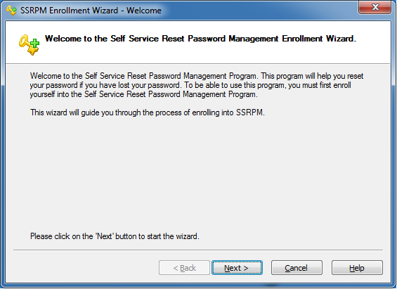
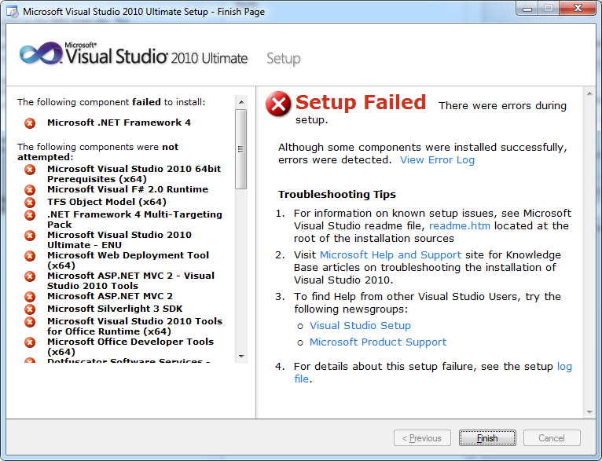
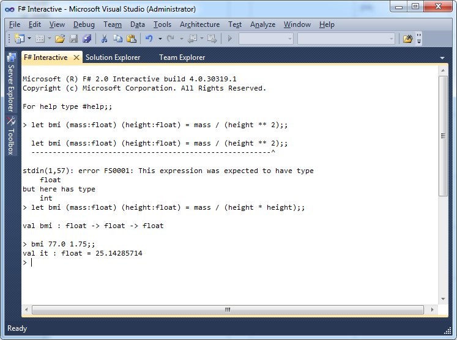
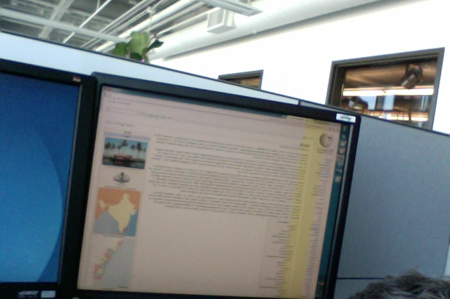

May 23, 2013
After more than a year of being fully immersed in a startup or two, Linux, AWS, mobile and web development, I’m doing a quick stint at a shop where friends of mine work. It’s the type of place I refer to as “Corporate America.”
The badge/security card wasn’t ready; it never is. So I was granted a tag to wear with my “escort.” Thankfully, since I’ve worked here before, everybody knows me and I have been given full rights to their production systems so my younger, Asian-Am “escort” doesn’t have to actually escort me all day long.
After doing the initial login with the usual P@ssword1 I was greeted with something new, the SSRPMEW.

More friction keeping me from the work I need to do. And, really, you want me to put my personally identifiable information into your systems so you can spend less money on IT staff and allow “me” to reset my password? I think not.
I don’t want a physical workstation. I’m a contractor. I want to use my tools to RDP/SSH through VPN into a VM that is configured for your environment. This can be securely, defensively configured. I did it with you a few years back. What happened since?
Today was customary. The workstation was “ready” but had none of the tools I need to manage your environment. After hours of locating soft media and installing programs it came time for Visual Studio, the installation that would probably take the longest. I let it go for 15 minutes then went into meetings, and yes, lunch. When I came back I was greeted with this:

Nice embedded web page (not) and the log file you’ve pointed me to is 1373 lines long. Luckily I’m good with log files so I figured it out and got Visual Studio installed, “some time” later.
During the installation I had naturally checked the F# options. Just being able to do some functional stuff made me feel better. I tried to see if I could remember anything from having peeked into F# a few years back.
Oops, type error!

Side note: “Visual Studio (Administator).” Still? Years back I tried to run some *nix programs as root and they wouldn’t let me.
I turned my back and when I looked back one of my monitors had developed a defect; one not fixable by cord-wigling or rebooting.

The photo is reversed because I am sans smart phone and used my notebook’s webcam (Photo Booth) to take the shot. I could have reversed the photo but wanted to tell you I don’t use a smart phone anymore. Kind of like the way this guys talks about TVs.
I felt like these corporate systems knew I had been cheating on them with Linuxy, startup systems and were just beginning to show their anger.
Here they use the stairwells to go from floor to floor but you need a keycard to get in from the stairwell onto the floor. I don’t have a keycard yet but decided I would leave and go home via the stairs. Apparently that’s not what they had in mind because the stairwell isn’t an “official” exit. So I was met with an “armed alarm emergency exit only” door. Stuck between that and the floor doors I couldn’t open I pushed through, triggering the alarm. No one rushed about so I went around, back into the building and over to the security staff to explain what was going on.
So forget all that. The interesting thing is that my unannounced return came with a catch-you-off-guard warm reception. Person after person stopped and chatted happily. “It’s good to have you back!” I kept hearing that, even from people I’d barely worked with.
So anyway, screw the bureaucracy and shitty software. And by that I mean forget it. I’ll use it for a while, as efficiently as it allows me, the way I did before. I’m already plugged in to where I can help them out. Let’s do it!
</rant>
<!-- End -->
</ramble>
<!-- End -->
<fun>
<!-- Resume -->